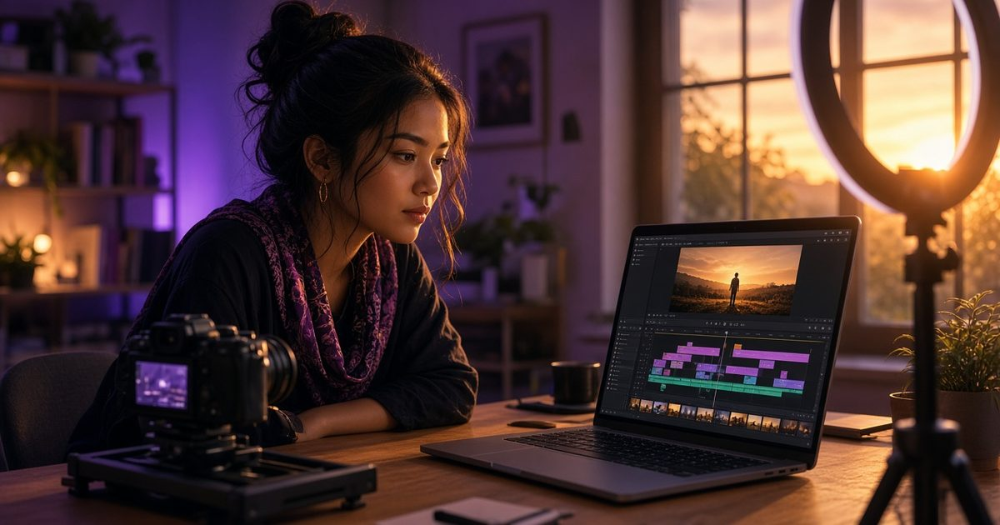
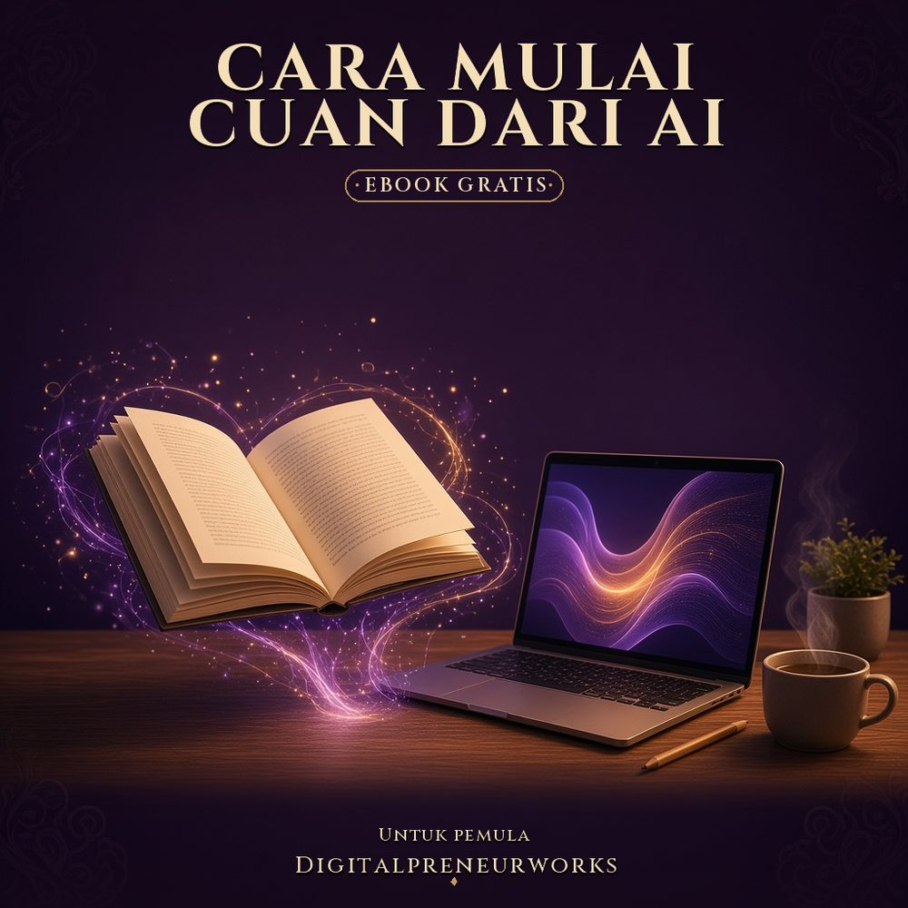
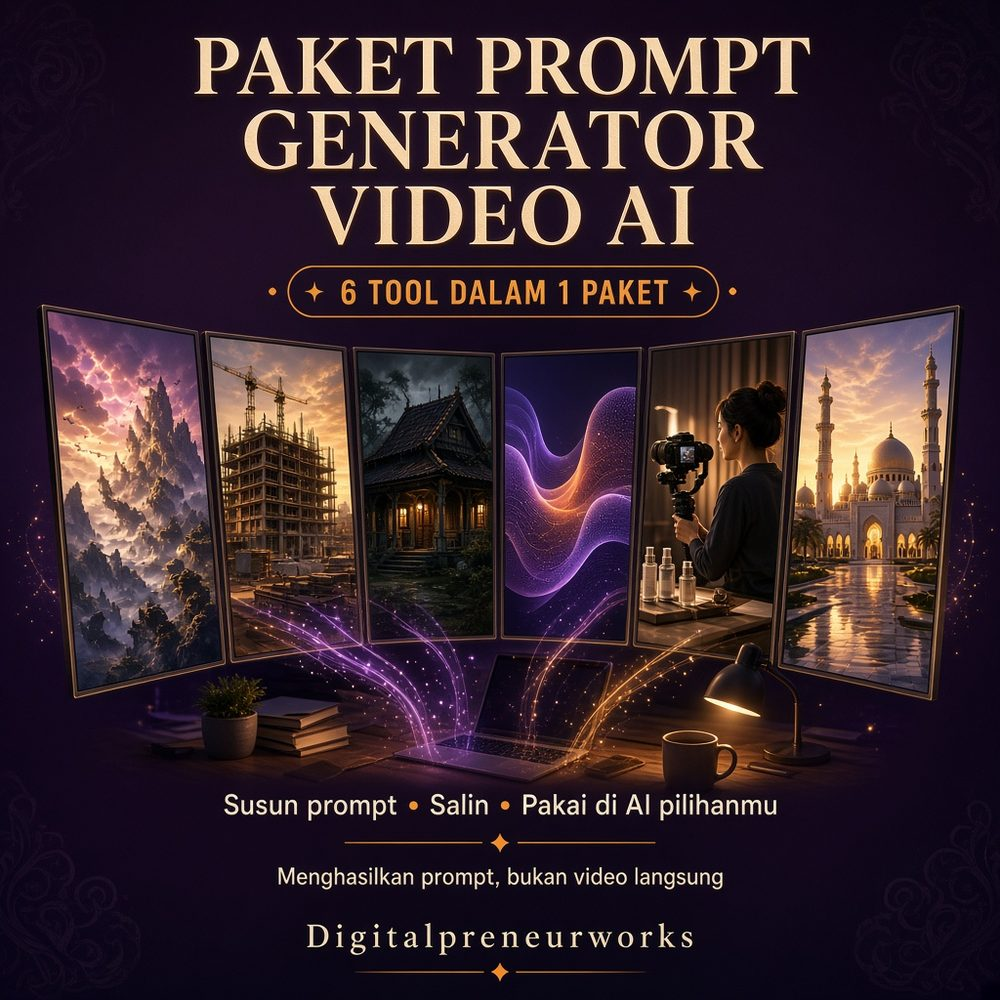

Cara Menulis Prompt Video AI Sinematik untuk Pemula
Belajar menulis prompt video AI sinematik: tentukan aksi, gerakan kamera, durasi, cahaya, gaya, dan konsistensi karakter tanpa instruksi yang bertabrakan.

Pernah bikin video AI, tapi gerakannya malah aneh? Orangnya berubah wajah, kamera muter tanpa arah, atau adegannya terasa seperti gambar yang dipaksa bergerak. Kamu nggak sendirian. Menulis prompt video memang perlu perhatian berbeda dari prompt gambar, karena yang kamu arahkan bukan cuma tampilan, tetapi juga perubahan sepanjang waktu.
Kabar baiknya, kamu nggak harus hafal istilah perfilman dulu. Mulai dari satu adegan sederhana, tentukan gerakan yang penting, lalu evaluasi hasilnya. Panduan ini membahas cara menulis prompt video AI sinematik tanpa membagikan prompt lengkap siap pakai. Fokusnya supaya kamu paham keputusan di balik instruksinya.
Sinematik bukan berarti semua harus dramatis
Video sinematik nggak selalu butuh ledakan, kabut tebal, atau kamera berputar. Kesan sinematik muncul saat komposisi, gerakan, cahaya, dan suasana terasa menyatu. Adegan seseorang membuka jendela bisa menarik kalau perhatian penonton diarahkan dengan jelas.
Sebelum menulis, tentukan fungsi klipnya. Apakah untuk pembuka cerita, detail produk, atau suasana pendukung? Pilih juga format tujuan, misalnya vertikal untuk Reels. Rasio, durasi, dan resolusi sebaiknya diatur lewat pengaturan layanan jika tersedia, bukan hanya disebut dalam teks.
1. Tentukan subjek dan satu aksi utama
Mulai dari siapa atau apa yang terlihat, lalu jelaskan tindakan yang dapat diamati. Kata seperti “sedih” menggambarkan perasaan, tetapi belum menjelaskan gerakan. Tindakan kecil seperti menunduk atau merapatkan jaket lebih mudah dibayangkan sebagai kejadian visual.
Potongan arahan seperti “menoleh perlahan ke jendela” sudah menunjukkan satu aksi. Ini hanya fragmen, bukan prompt lengkap. Untuk latihan pertama, hindari meminta tokoh berlari, mengambil benda, berbicara, lalu berpindah tempat dalam satu klip pendek.
Perhatikan juga interaksi fisik. Tangan memegang benda kecil, banyak orang bersentuhan, atau gerakan sangat cepat bisa memunculkan keanehan. Bukan berarti nggak boleh dicoba, tetapi sederhanakan dulu kalau tujuanmu belajar mengendalikan hasil.
2. Bedakan gerakan subjek dan gerakan kamera
Subjek bisa berjalan sementara kamera diam. Sebaliknya, subjek bisa duduk sementara kamera mendekat. Dua hal ini berbeda dan sebaiknya kamu pikirkan secara terpisah agar instruksinya nggak saling bertabrakan.
Beberapa pilihan gerakan kamera yang perlu dikenali:
- Kamera statis: posisi kamera tetap; cocok untuk mengamati aksi sederhana.
- Pan: kamera menoleh ke samping dari posisi yang relatif tetap.
- Tilt: arah pandangan kamera bergerak ke atas atau bawah.
- Dolly in: kamera bergerak mendekati subjek, bukan sekadar memperbesar gambar.
- Tracking: kamera mengikuti perpindahan subjek.
Pilih satu gerakan utama dulu. Fragmen “kamera mendekat perlahan” lebih terarah daripada menumpuk banyak istilah. Hasil tiap layanan bisa berbeda, jadi anggap istilah kamera sebagai arahan yang perlu diuji, bukan jaminan gerakan presisi.
3. Sesuaikan aksi dengan durasi dan jumlah shot
Shot adalah satu pengambilan gambar yang berlangsung tanpa perpindahan potongan. Untuk pemula, satu klip dengan satu shot biasanya lebih mudah dievaluasi daripada meminta cerita panjang sekaligus. Kamu bisa melihat apakah masalahnya ada pada aksi, kamera, atau perubahan bentuk.
Bayangkan klip sekitar lima detik. Waktu itu mungkin cukup untuk satu gerakan sederhana, tetapi terlalu padat untuk perkenalan tokoh, konflik, dan penyelesaian. Durasi yang tersedia mengikuti layanan dan paket yang kamu gunakan; cek pilihannya sebelum menyusun adegan.
Kalau ingin membuat cerita, pecah menjadi beberapa shot dalam catatan sederhana. Tulis fungsi masing-masing: pembuka lokasi, aksi utama, lalu reaksi tokoh. Buat klipnya terpisah dan susun di editor. Transisi, tempo, dan musik bisa dirapikan setelahnya, bukan semuanya dibebankan ke satu prompt.
4. Arahkan suasana dan cahaya yang masuk akal
Pilih suasana yang mendukung tujuan adegan. Hangat dan tenang membutuhkan pendekatan berbeda dari tegang dan dingin. Lalu tentukan sumber cahaya yang masuk akal, misalnya jendela, lampu meja, atau matahari sore.
Fragmen “cahaya sore dari samping” memberi arah yang lebih jelas daripada sekadar “pencahayaan bagus”. Kamu nggak perlu memasukkan semua istilah teknis. Satu sumber cahaya dominan dan pilihan warna sederhana sering lebih mudah dijaga konsistensinya.
Ingat, cahaya juga berubah sepanjang video. Kalau kamu menginginkan suasana stabil, jangan sekaligus meminta pergantian siang ke malam dalam klip yang sama. Perubahan besar seperti itu lebih cocok direncanakan sebagai kebutuhan khusus, bukan tambahan supaya terlihat keren.
5. Pilih gaya, lalu jaga konsistensi karakter
Pilih satu arah visual utama, seperti realistis atau animasi tiga dimensi. Menumpuk gaya dokumenter, kartun, dan fantasi sekaligus sering membuat tujuan visual kabur. Sinematik sendiri bukan tombol ajaib; tetap jelaskan suasana dan gerakan yang kamu butuhkan.
Untuk karakter antaradegan, buat catatan identitas singkat: ciri wajah, rambut, pakaian, aksesori, dan warna dominan. Pertahankan deskripsi yang sama pada shot berikutnya. Catat pula posisi benda dan arah gerakan supaya sambungan klip nggak terasa mendadak berubah.
Kalau layanan mendukung gambar referensi atau fitur karakter, manfaatkan sesuai petunjuknya. Gunakan gambar milik sendiri atau yang izinnya jelas. Referensi membantu, tetapi nggak menjamin wajah selalu identik. Periksa tiap klip, terutama detail pakaian, bentuk tangan, dan benda yang berpindah.
Kesalahan pemula yang sering bikin hasil sulit dikendalikan
- Terlalu banyak kejadian: pecah adegan menjadi beberapa klip, bukan menambah instruksi tanpa henti.
- Arahan saling bertentangan: kamera statis dan kamera mengitari tokoh bukan pilihan yang sama.
- Mengandalkan kata “cinematic” saja: tentukan aksi, cahaya, dan perhatian utama penonton.
- Mengubah semua unsur sekaligus: kamu jadi nggak tahu revisi mana yang membantu.
- Menganggap satu hasil mewakili semuanya: keluaran bisa bervariasi meski instruksinya mirip.
- Lupa mengecek hasil akhir: tulisan acak, wajah berubah, dan gerakan janggal tetap perlu diperiksa.
Saat mencoba ulang, ubah satu unsur lebih dulu. Simpan versi instruksi dan catatan hasilnya. Kalau layanan memakai kredit, tentukan batas percobaan sebelum mulai. Belajar tetap bisa bertahap tanpa harus mengejar banyak variasi dalam sekali duduk.
Checklist singkat sebelum membuat klip
- Tujuan klip dan format penayangannya sudah jelas.
- Ada satu subjek utama dan aksi yang masuk akal untuk durasinya.
- Gerakan kamera nggak bertabrakan dengan instruksi lain.
- Suasana, sumber cahaya, dan gaya saling mendukung.
- Ciri karakter serta referensinya konsisten antarshot.
- Pengaturan layanan, izin bahan, dan batas biaya sudah dicek.
Setelah klip jadi, tonton sampai selesai, bukan hanya melihat bingkai pertama. Periksa perubahan wajah, hubungan tangan dengan benda, latar yang bergeser, dan sambungan gerak. Tambahkan teks atau subtitle lewat editor jika hasil tulisan dari AI belum rapi.
FAQ tentang prompt video AI
Harus pakai bahasa Inggris?
Nggak selalu. Dukungan bahasa berbeda di tiap layanan. Mulai dengan bahasa yang kamu pahami, lalu ikuti panduan layanan tersebut. Kalau menerjemahkan instruksi, cek lagi agar arah gerak dan detail pentingnya nggak berubah.
Kenapa hasilnya berbeda meski prompt sama?
Pembuatan video AI melibatkan variasi keluaran. Pengaturan, model, dan referensi juga berpengaruh. Instruksi yang jelas membantu mengarahkan hasil, tetapi bukan jaminan klip akan identik atau langsung sesuai bayangan.
Bisa bikin karakter yang sama di semua adegan?
Bisa diupayakan lewat deskripsi konsisten dan fitur referensi yang tersedia, tetapi hasilnya tetap perlu dicek. Mulai dari sedikit adegan dan simpan catatan karakter. Jangan menganggap wajah pasti konsisten hanya karena namanya sama.
Apakah Prompt Generator langsung membuat video?
Tidak. Prompt Generator hanya menyusun prompt siap salin. Kamu masih perlu menjalankan prompt tersebut di layanan AI video pilihanmu, mengikuti batas fitur dan biayanya, lalu menyeleksi serta mengedit hasilnya sendiri.
Mau menyusun arahan dengan lebih terarah?
Kalau sering bingung merangkai instruksi, kamu bisa melihat Paket Kreator Video AI dari Digitalpreneurworks seharga Rp79.000. Isinya enam Prompt Generator: Sinematik, Timelapse, Horor, Edukasi Kesehatan, UGC, dan Kisah Islami.
Paket ini menghasilkan prompt siap salin, bukan video, dan bukan jaminan hasil tertentu. Akses layanan AI video serta biaya pemakaiannya mengikuti ketentuan layanan yang kamu pilih. Mulai dari satu adegan sederhana dulu; yang penting kamu tahu apa yang ingin diarahkan dan apa yang perlu diperbaiki.
Mau lanjut?

Ebook Gratis: Cara Mulai Cuan dari AI untuk Pemula
Peta jalan 14 halaman: 5 jalur cuan, cara berpikir prompt, rencana 30 hari.

Paket Kreator Video AI: 6 Prompt Generator
Enam Prompt Generator: Sinematik, Timelapse, Horor, Edukasi Kesehatan, UGC, dan Kisah Islami. Menghasilkan prompt siap salin, bukan video. Jalankan di layanan AI video pilihanmu.